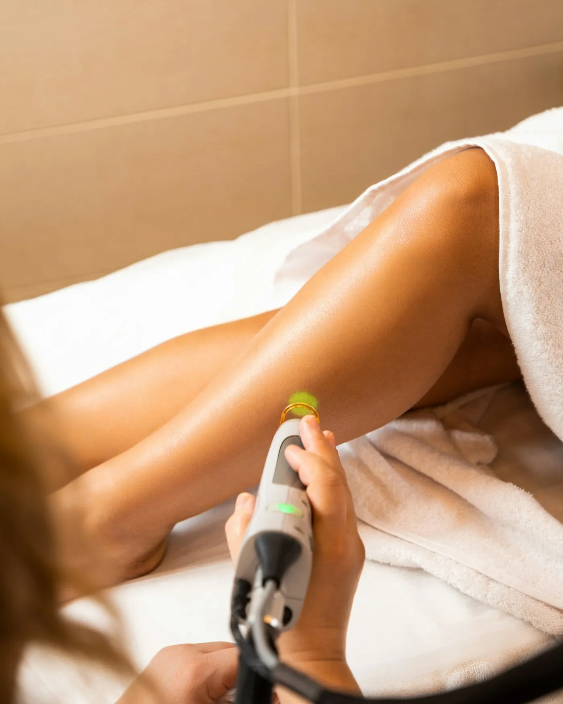
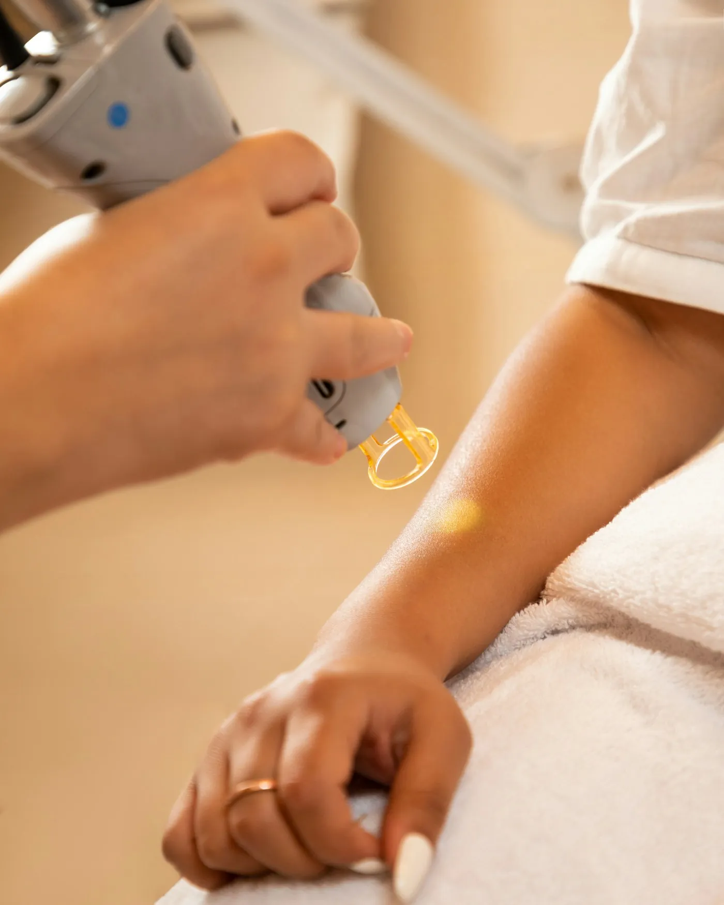

Clube 3 áreas
R$ 149/mês
1 sessão por mês em até 3 áreas pequenas. Cancele quando quiser.
Entrar no clubeSem tabela escondida e sem pacote empurrado. Laser certo para pele clara, morena ou negra, e a primeira sessão de teste é grátis.


Cada pele pede um laser e um número de sessões. Toque no tom mais parecido com o seu.
O laser que usamos em cada tom foi aprovado pela Anvisa e é ajustado pela técnica na primeira sessão.
Para quem quer manter depois do pacote, ou fazer várias áreas pagando pouco por mês.
Clube 3 áreas
R$ 149/mês
1 sessão por mês em até 3 áreas pequenas. Cancele quando quiser.
Entrar no clubeClube corpo inteiro
R$ 389/mês
Todas as áreas, 1 sessão por mês, com 1 acompanhante com 20% de desconto.
Entrar no clubeParece um elástico batendo na pele, por menos de um segundo. O aparelho tem resfriamento na ponteira, e a maioria das clientes diz que dói menos que a cera.
Evite sol forte na área 7 dias antes e depois da sessão. No verão, fazemos as áreas cobertas pela roupa.
O laser só pega o pelo na fase de crescimento, e cada pelo está numa fase. Com sessões a cada 30 a 45 dias, você pega todos.